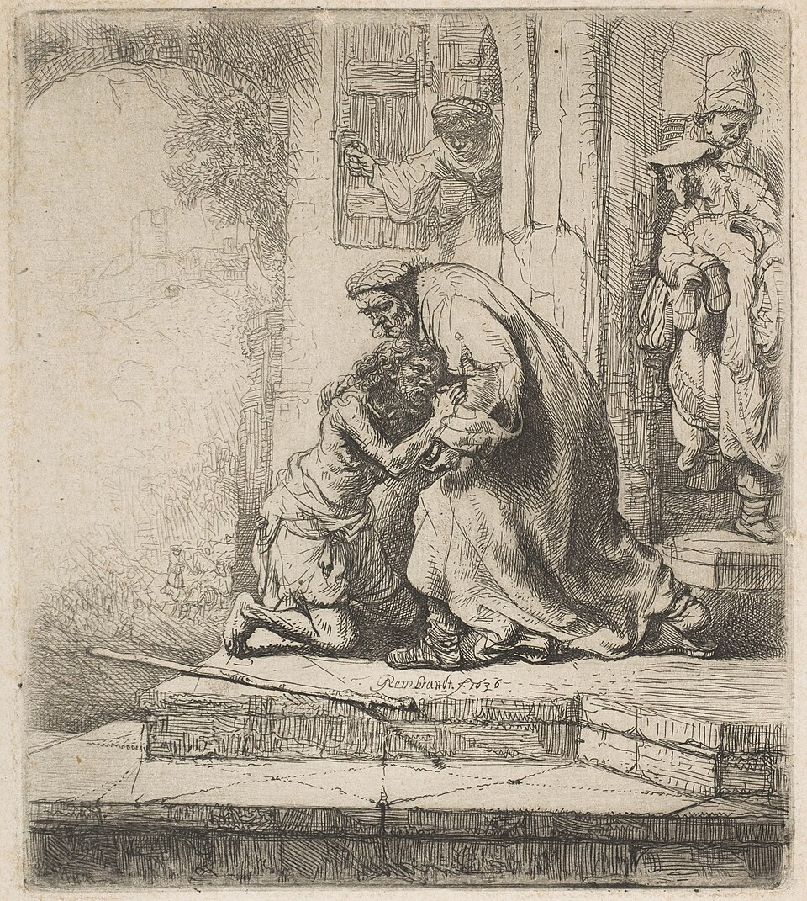
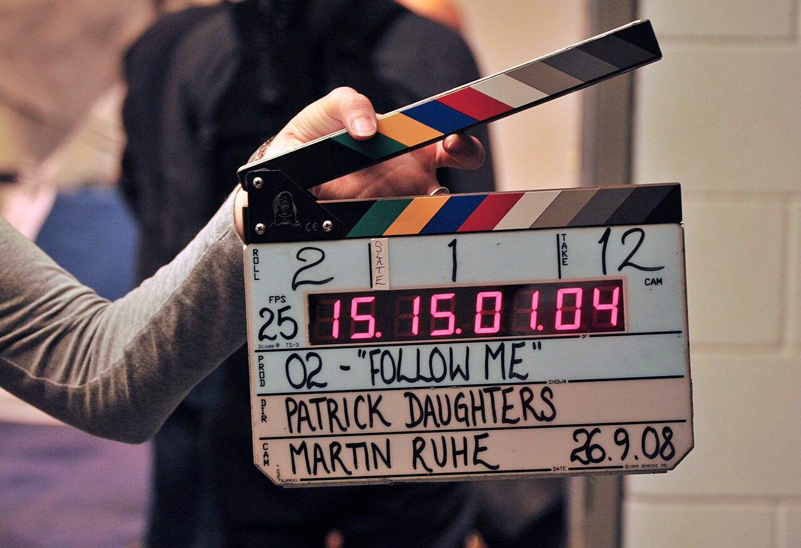
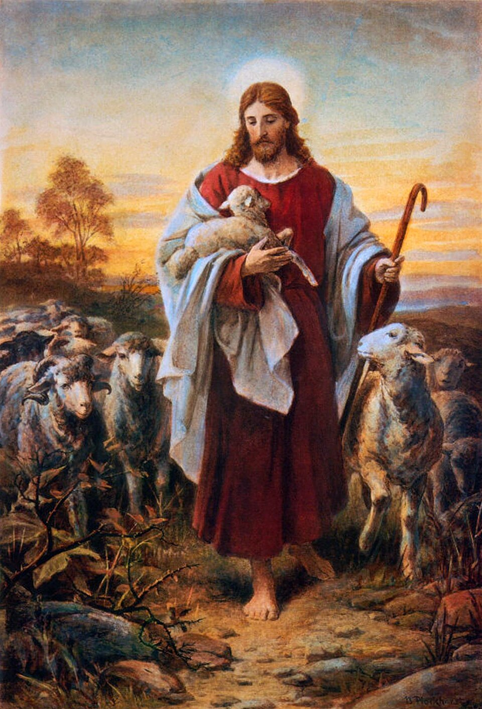

От пригодного черновика — к готовым материалам для служения
Свой конструктор
Цель — раскраска к Лк 15:20

По гайду Google для Nano Banana
Свой конструктор

Пир в доме — отдельный клип с новым первым кадром
[Push in]Песня на стих Писания
Пример — Пс 22 «Господь — Пастырь мой»

[Verse] [Chorus]children's worship song, joyful and warm, acoustic guitar, soft piano, children's choir, 90 bpm
electric guitar, rap, heavy drums, autotune
[Verse] Господь — Пастырь мой, я ни в чём не буду нуждаться. Он покоит меня на злачных пажитях и водит меня к водам тихим. [Chorus] Господь — Пастырь мой! Господь — Пастырь мой!
[Verse] Подкрепляет душу мою, направляет меня на стези правды ради имени Своего. [Chorus] Господь — Пастырь мой! Господь — Пастырь мой! [Outro]
Конспект → слайды → .pptx и PDF на печать
Лимиты и доступ — проверить на своём аккаунте
+ своя раскраска к Лк 15:20 на нужный слайд
Свой ближайший отрывок — через полный цикл
Вопросы?